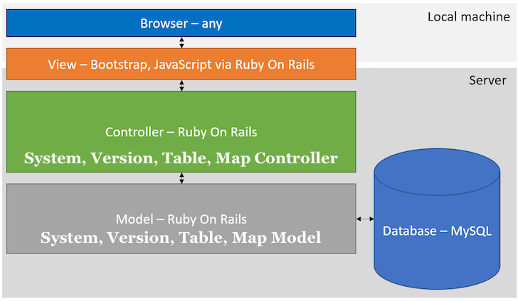
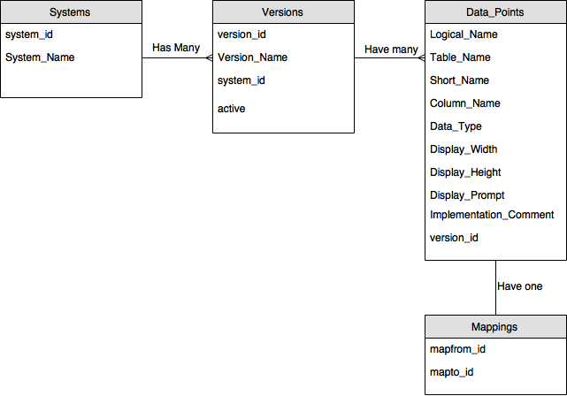

Architectural Diagrams
In order to describe the architecure of our system, we created some Architectural Diagrams. These are intended to give a visual representation of our architecture in a way that is easy to understand. They can be seen below:
Model, View, Controller

The overall design of our system follows the "Model, View, Controller" principle which is very much fundamental when using Rails. It allows us to write the code for our application in a clear and structured way that should be easy to understand.
Database Design

Our database used required four different tables in order to complete the task required. We had tables for "Systems", "Versions", "Data_Points" and "Mappings" which were related as shown in the diagram above. "Systems", "Versions" and "Data_Points" are all connected using a foreign key - we are storing the primary key from the table above it in the table. This allows us to easily find information such as the name of a system from a given set of data points. It was clear from the start that we wanted to use this approach as it is good database design practice and reduces things such as data duplication and data inconsistencies.